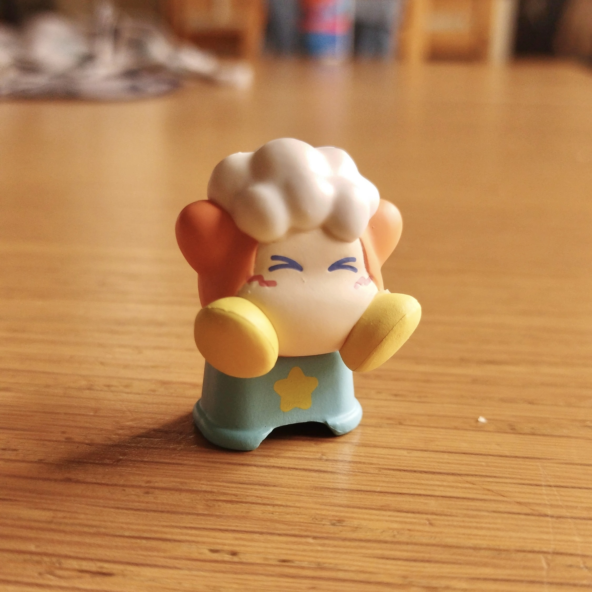

間渕 颯太
馬と書く方のまぶち（馬渕）が多いらしく、よくそれと間違えられる。
この前HAL名古屋に体験入学しに行ったら、何故か「間淵」と間違えられた。なんで。
基本情報
2010年2月12日生まれ、A型。
浜松市立湖東中学校出身。
中学では吹奏楽部でTubaを担当。現在は情報処理部。
座右の銘は「一芸は道に通ずる」。
趣味
新しいことに挑戦するのが好きです。
面白いこと見つけたら平気で10時間とかやります。
最近はAtCoderで競プロしたり、Ableton Liveで曲作ったりしてます。
好きなもの
ゲーム
カービィが好きです。エアライダーやりたいけどSwitch2ないのでできません。